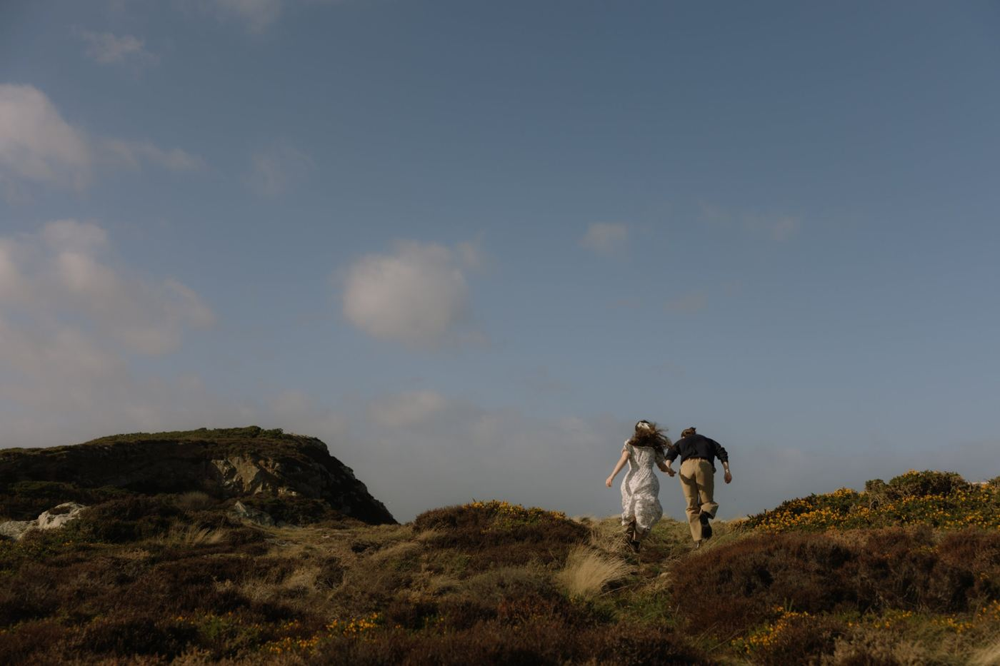
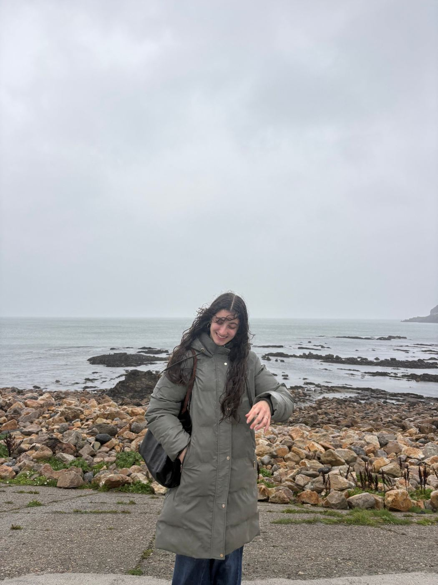
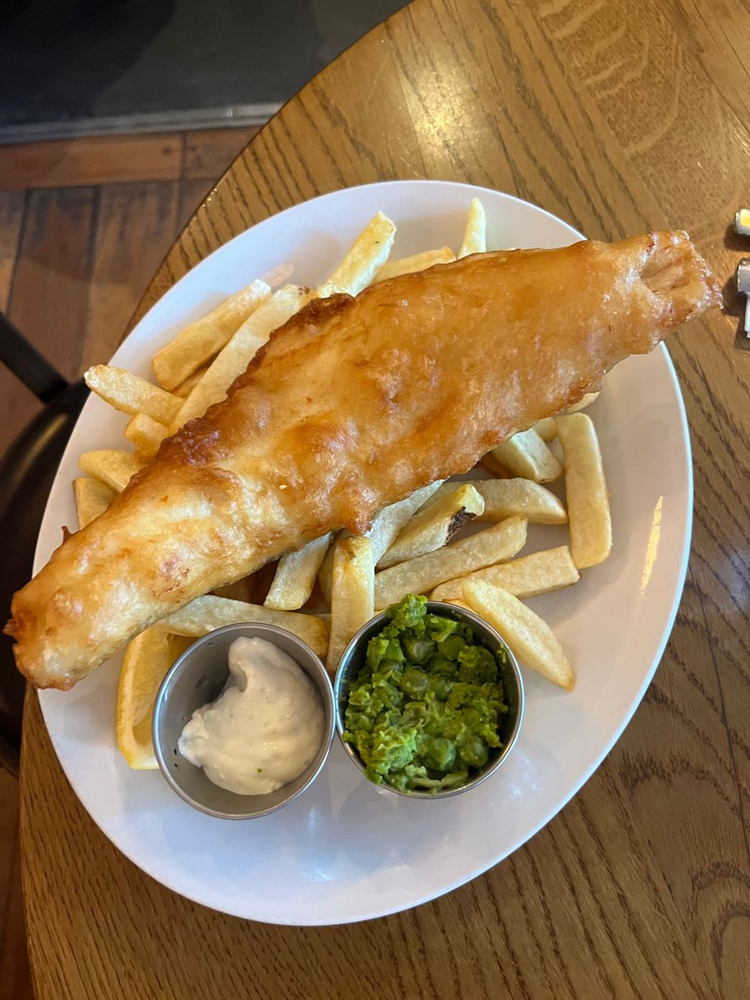

- Bus from Dublin€1 each way
- Cliff walkFree
- Fish and chips€15 to 25
- Travel timeAbout 1 hour
The cliffs at Howth are free, the bus from Dublin is €1 each way with a Leap Card, and takeaway fish and chips is about €15. Add seals in the harbour, a boardwalk along the water, and cute local shops, and you have one of the easiest day trips from Dublin.
Howth is a fishing village on a small peninsula in Fingal, County Dublin, about an hour's bus ride from the city centre. If you're anywhere near Dublin, put it on your list before you leave.
1. The Howth cliffs Free
These are the kind of cliffs you see in movies, high above the sea. You don't need a tour or a ticket, and they're a quick walk from the centre of the village.

2. The weather can make or break your trip
We went on a windy, rainy weekend and could barely see anything. Walking the boardwalk was a struggle, and we held onto our bags for dear life. When the weather cleared near the end of the trip, it was absolutely worth the wait.

Tip: Check the forecast before you go, and bring a rain jacket either way.
3. Fish and chips is cheaper to take away €15 vs €25
Howth is known for its seafood, and the fish and chips is worth it. Where you eat it changes the price, though. We sat down at a restaurant along the coast and paid €25. The same meal to take away is about €15.

Tip: Seafood restaurants often have a wait on weekends. Taking your food to go saves you time as well as €10, and you can eat it by the water.
Getting there (€1 each way)
We took the bus from Dublin city centre, which took about an hour and cost €1 each way with a Leap Card. Fares can change, so check current prices on Transport for Ireland before you go.
What we spent
Final Thoughts
Howth was 100% worth the trip. The cliffs are free, the views are unreal, and the whole day can cost less than a night out in Dublin. Between the walk and browsing the local shops, it's an easy, cheap escape from the city.
Have you been to Howth? Did you get lucky with the weather, or were you holding onto your bags like we were? Let me know in the comments!